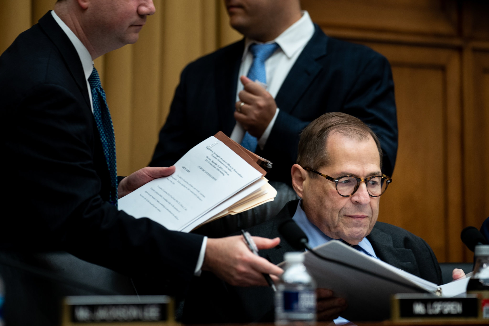

The Impeachment Process
EXPLAINED.
In light of Speaker of the House Nancy Pelosi's announcement
of the House's formal impeachment inquiry of President Trump,
many people are left questioning,
what is the impeachment
process in the U.S. and how
will President Trump be tried?
SCROLL DOWN to find out.

Information sourced from The New York Times.
Drawing by Dave Grandlund
Website by Natalie Huggins.
What is Impeachment?
We're not talking fruits and vegtables.
The U.S. Consitution permits impeachment as the
removal of a holder of public office by the means
of a charge of misconduct.
Article II, section 4 states "The President, Vice President
and all Civil Officers of the United States, shall be
removed from Office on Impeachment for, and
Conviction of, Treason, Bribery, or other high
Crimes and Misdemeanors."
Two U.S. Presidents have been impeached
in history, Andrew Johnson and Bill Clinton.
Neither were convicted by the Senate,
or formally removed from office --
but how's the Senate involved?
How is the House?

The Trump administration refused to share a whistleblower complaint, related to Mr. Trump’s communications with Ukraine’s president, with Congress.CreditCreditDoug Mills/The New York Times
The House's Role
The House Judiciary Committee first conducts an investigation and recommends articles of impeachment to the full House. "When the full House votes on articles of impeachment, if at least one gets a majority vote, the president is impeached —
which is essentially the equivalent of being indicted." (The New York Times) If there is
a majority vote, the articles of impeachment move to the Senate, which holds a trial.

The Senate's Role
For the trial, the president has defense lawyers, and the Senate serves as the jury. The Senate holds a vote to convict the president.
If at least two-thirds of the senators find the president guilty, they are removed from office. There is no appeal.

Representative Jerrold Nadler, the chairman of the Judiciary Committee, has claimed that the panel is already engaged in an impeachment investigation.CreditErin Schaff/The New York Times
Impeachment Process Quiz
Test your new knowledge of the Impeachment Process in the U.S.